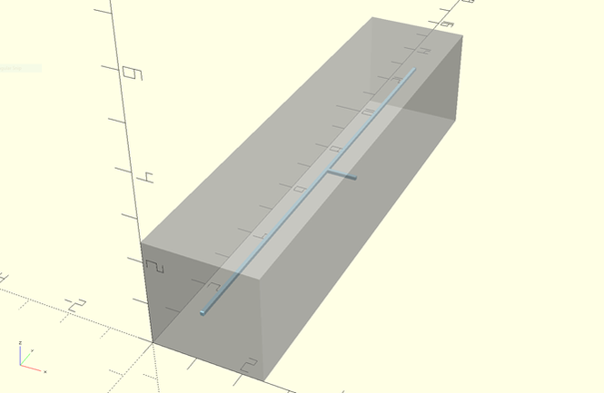
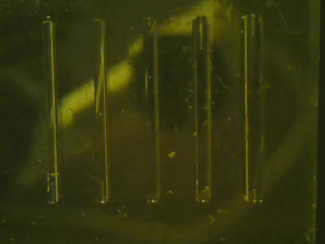
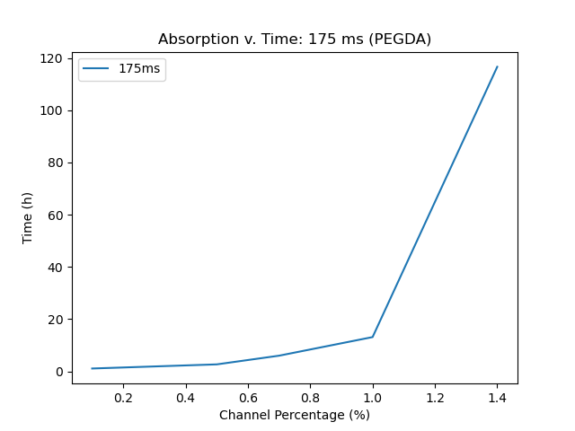
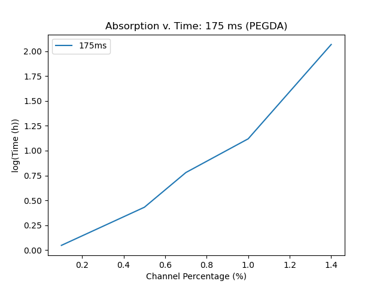

BYU Electrical Engineering · Feb 2024 – Jun 2025
Self-Clearing Channels in 3D-Printed Microfluidics
Channels and valves inside a 3D-printed microfluidic chip start out full of uncured resin. Given time, they clear out on their own. This project studied why, and how long it takes.
Alejandro Pelaez, Wesley Wardle, Max Rawlings, Greg Nordin · Oral presentation, BYU IMMERSE, May 2024

What is self-clearing?
When a microfluidic chip is printed from photopolymer resin (here, PEGDA), the empty features such as channels and valves are left filled with unpolymerized resin. Usually that resin is flushed out by hand. We found that, given enough time, the voids clear themselves, and that this is as effective as flushing.
Time-lapse recordings of printed test channels clearing on their own.
Two theories
- Full channel clearing. Resin leaves the channel in an initial clearing phase followed by a slower secondary phase.
- Resin absorption. Unpolymerized resin inside the channel is absorbed into the bulk of the chip, by diffusion or other mechanisms.


Method and findings
Instead of tracking volume absorbed over time, we changed the experiment to measure total clearing time as a function of channel ratio: the channel's size relative to the chip. That framing is more practical for anyone designing a device. The results point to a potentially exponential relationship between channel ratio and clearing time.


Planned paper structure
- Single-channel clearing
- Offshoot-channel testing
- Device practicality and effectiveness, working toward a self-clearing squeeze valve
My role
- Led the project: ideas, experiment structure, analysis, and reporting
- Built an electronic automation platform for device preparation, cutting prep from 2 days to 4–6 hours and removing human error
- Mentored two undergraduate researchers with weekly goal-planning and accountability meetings
- Delivered microfluidic prints to Mechanical Engineering collaborators within 3 days of a print request